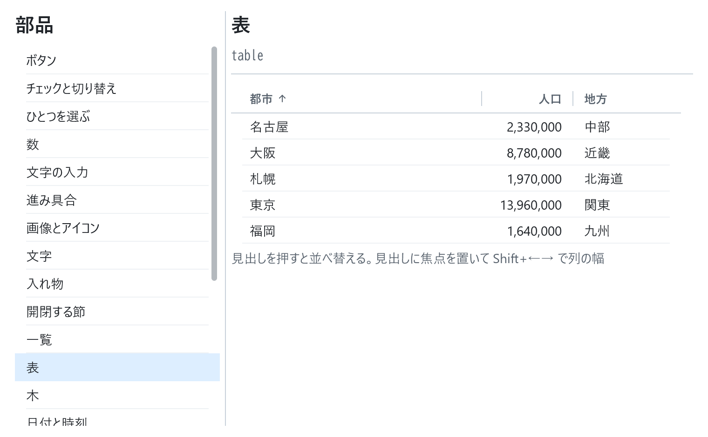
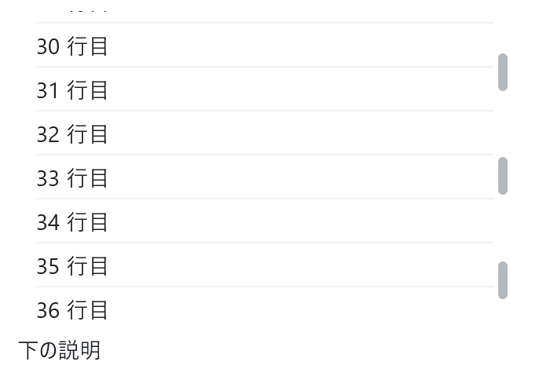
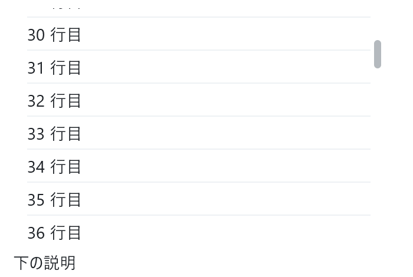

kargui 開発レポート ・ 第 11 章
0.3.0 の仕上げと、作者の手の確かめ
第 10 章の Linux の窓が X11 まで入ったところで、作者が 0.3.0 で区切ると決めました。この章では、0.3.0 の前に片付けた 6 つの宿題、部品を 1 つずつ見せる見本、X11 の IBus を紹介します。後半では、作者が見本で 5 回試した記録から見つけた不具合を書きます。引くと幅が増え続けるつまみ、押せないスクロールの棒、二重に見えた棒、消える焦点の 4 つです。
この章で分かること
- 0.3.0 に入れた物と、後に回した物
- 6 つの宿題（パスワードの欄の日本語入力、数の押し続け、キーボードで列の幅、文字で飛ぶ、GPU の画像、clippy の注意）
- X11 の日本語入力で、fcitx5 がいない時に IBus を使う作り
- 動かない側の端を考えずにつまみを置くと、幅が増え続ける理由
- 幅いっぱいの行が、スクロールの棒を覆っていた理由
- 入れ物の中の一覧をスクロールすると、古いつまみの絵が残った理由
- 何も無い所を押した時の焦点を、ウェブの決まりからデスクトップの決まりに変えた理由
0.3.0 の範囲
0.2.0 の後の作業は、第 5 章から第 10 章に書いてきました。作者は、Linux の窓が X11 まで入った所で区切り、宿題と見本を足して 0.3.0 にすると決めました。
| 区分 | 中身 |
|---|---|
| 0.2.0 の後に足した物 | ドラッグ＆ドロップ、動き、書体、色と時刻の選択、書式付きの文字（第 5 章〜第 9 章）、Linux の窓（第 10 章） |
| 0.3.0 の前に足した物 | 狭い表の列のずれの直し、6 つの宿題、部品の見本（examples/gallery）、X11 の IBus（この章） |
| 後に回した物（0.4 の候補） | ドッキング、Windows の題の帯の作り替え、トレイ、通知、ハイコントラスト、多言語、本物の Xorg、macOS |
6 つの宿題
宿題の前に、第 10 章の終わりに書いた表の列のずれを直しました（b1c2253）。狭い窓で名前の列が中身より狭くなると、名前の長い行だけ後ろの列が右へずれていました。今は、升より広い文字を升の端で切るので、後ろの列は見出しの下に残ります。見出しの升も同じです。
宿題は、0.2 の後の作業の途中で「後で直す」と書き留めていた物です。どれも小さい変更ですが、使う人が気づきやすい所です。
| 宿題 | したこと |
|---|---|
| パスワードの欄の日本語入力 | パスワードの欄に焦点がある間は、日本語入力を切る（Windows・Wayland・X11）。打った文字は、日本語入力の変換や学習に送られない。Windows の標準のパスワードの欄と同じ |
| 数の入力の押し続け | 小さいボタンを押したままにすると、すぐに 1 つ進み、400 ms 後から 60 ms ごとに進む。押していた時間で数えるので、フレームが遅れても遅くならない |
| キーボードで列の幅 | 表の見出しに焦点を置き、Shift+→ で 10 広く、Shift+← で 10 狭くする。並べ替えない表でも、幅を変えられる列があれば見出しに焦点を置ける |
| 文字で飛ぶ | List::type_ahead と Table::type_ahead。打った文字で始まる次の行へ飛ぶ。見えない行は作らないので、行の文字はアプリが渡す |
| GPU の画像 | Direct3D 11 の道で、画像を描くようにした（前は抜けていた）。CPU の道と撮り比べて、色が 24 段より違う画素は 0 |
| clippy の注意 | Windows と Linux の両方で 0 にした（2571f69）。以後は 0 を保つ |
部品の見本
examples/gallery は、部品を 1 つずつ見せる見本です。左の一覧で部品を選ぶと、右にその部品のページが出ます。ページは 22 枚あり、どのページもふつうの状態と押せない状態を並べ、使う関数の名前を見出しの下に出します。左の一覧は、文字を打つとその文字で始まるページへ飛べます。

始めのページは環境変数 GALLERY_PAGE で、GPU の道は --renderer gpu で選べます。作者の手の確かめは、この見本で行いました。
X11 の日本語入力に IBus を足した
第 10 章の X11 の窓は、日本語入力に fcitx5 だけを使っていました。Linux の配布物には、IBus を標準にしている物も多くあります。そこで 0.3.0 では、fcitx5 がいない時に IBus を使うようにしました。
- 頼みと知らせの型を 2 つの日本語入力で共通にし、会話のバス（D-Bus）に今いる方を選ぶ。D-Bus の起動の仕組みで立ち上げることはしない
- 両方いれば fcitx5 を選ぶ。
XMODIFIERS=@im=ibusの時だけ IBus を先にする - IBus には、ポータル（
org.freedesktop.portal.IBus）を通して入力の文脈を作る - 変換中の文字の文節は、IBus が送る文字の属性（背景か 2 本の下線の範囲）から作る。ibus-mozc が実際に送った形を試験にした
fcitx5 は、IBus 向けに作られたアプリのために、IBus と同じ名前を D-Bus に出しています。名前があるかだけで IBus がいると決めると、fcitx5 を IBus として使ってしまいます。kargui は、IBus の名前の持ち主が fcitx5 と同じなら、IBus がいるとは数えません。
確かめは、検証用の Linux の PC の XWayland で、IBus 1.5.32 と ibus-mozc、fcitx5 と Mozc の両方で行いました。AI が打つ道具の wtype は仮のキー配列を使うので、キーの番号で文字を決める ibus-mozc では「１２１３…」と数字になりました。本物のキーボードでは起きないので、IBus の確かめは本物のキーボードと同じ道で打つ ydotool に替えました。
作者の手の確かめ（5 回）
0.3.0 の準備（825bed7）の後、作者が見本で手の確かめをしました。作者は手順どおりに操作するだけで、AI が記録を読んで異常を探します（第 3 章）。直すと次の確かめで別の不具合が見つかる、という形で 5 回続きました。
| 回と時刻 | 記録から見つかったこと | 直した記録 |
|---|---|---|
| 1 回目（10 時 3 分） | パスワード・押し続け・GPU の画像・IBus は期待どおり。数字で飛べない。列の幅が変わらない（手順の誤り）。調べる途中で、引くと幅が増え続けるつまみと、Linux のテンキーも見つけた | deca574 |
| 2 回目（19 時 25 分） | 一覧の棒を押すと行が選ばれる。遠くへスクロールすると数字で飛べない。作者から「棒が二重に見える」「棒を引けない場面がある」と質問 | deca574 |
| 3 回目（19 時 45 分） | 入力欄の棒の上で、ポインターが I の形のまま（作者の指摘）。棒の右の端の 1 画素外を押すと、焦点が外れる | deca574 |
| 4 回目（19 時 59 分） | 直した所は期待どおり。一覧から離れた何も無い所を押すと、焦点が外れる（決まりどおりの動き。作者に相談した） | 3a17431 |
| 5 回目（20 時 33 分） | 焦点の決まりを変えた後の確かめ。一覧・入力欄・日本語入力・パスワードの欄とも期待どおり | なし |
1 回目で列の幅が変わらなかったのは、AI が書いた手順の誤りでした。手順は「都市の見出しを押して Shift+→」でしたが、都市は残りの幅を使う列（.fill()）で、当時の kargui は fill の列の幅を Shift+←→ で変えませんでした。手順を書く時は、その操作が効く前提（幅を決めた列か、など）を先に確かめてください。今は fill の列でも、隣の列との境が動きます。
引くと、幅が増え続けるつまみ
手順の誤りを調べる途中で、もっと大きな不具合が見つかりました。見本と examples/files の表で、列のつまみを引くと、ポインターを動かした分より大きく幅が増え続けます。試験台では、120 の列を 20 引いただけで 200 になり、離すと 460 になりました。
原因は、つまみの位置と、動かない側の端の組み合わせでした。
- kargui は、どの列もつまみを右の端に置き、ポインターとつまみの距離を幅に足していた。
- fill の列が左にある表では、右の列の右の端が動かない。広げると、左の端の方が左へ動く。
- つまみは右の端にあるので動かず、ポインターとの距離も変わらない。そのため、毎フレーム同じ距離を足し続けた。
直し方は 2 つです。fill の列より右の列は、つまみを左の端に置きます。幅は、動かない側の端（右の端）からポインターまでの長さで決めます。もう 1 つは、押した位置（press_at）を覚え、そこからのずれでつまみを動かすことです。1 回のフレームで押す・動かす・離すが届くと、押した時のつまみの位置が分からず、ずれが 0 になってしまうからです。
数字で飛べない、テンキーが矢印としても届く
文字で飛ぶ処理は、キーを文字にする所が A〜Z だけを扱っていました。見本の一覧の行は「0 行目」「1 行目」…なので、一度も飛べませんでした。数字も文字にし、NumLock を入れたテンキーの数字も、上の段の数字と同じキーにしました。
Linux では、もう 1 つ不具合がありました。テンキーのキーは、修飾の無い段（段 0）の記号が KP_Left などの矢印です。kargui は段 0 の記号でキーを決めていたので、NumLock を入れたテンキーの 4 は、← のキーとしても届きました。入力欄で「abc」の後にテンキーの 4 を打つと、字の位置が動いてから 4 が入り、「a4bc」になりました。今は、NumLock を入れた時の今の記号が数字なら、数字のキーとして届けます。
押せない棒と、I の形のポインター
2 回目の記録では、作者が一覧の右端の棒（x=864〜869）を 4 回押していました。ところが、棒をつかんだ記録は無く、押した先は行でした。作者からも「棒を引けない場面がある」と質問がありました。
- 選べる一覧の行は、行全体を押せる当たりを持っている。行は一覧の幅いっぱいなので、右端の棒を覆っている。
- kargui は、部品の当たりの中なら部品を先にする決まりだった。行の右端のボタンが棒にかかっても押せるようにするためだった。
- そのため、棒の上を押すと行が選ばれ、棒は押せなかった。複数行の入力欄も、欄そのものの当たりが中の棒を覆っていた。
直し方は、棒の幅を全部覆う当たりは棒に譲る、という決まりです。棒に一部だけかかる部品（行の右端のボタンなど）は、今までどおり部品を先にします。
3 回目では、作者から「入力欄の棒の上でも、ポインターが文字を打つ時の I の形のまま」と指摘がありました。ポインターの形は、Windows・Wayland・X11 の 3 か所に同じ判定が別々に書いてあり、どれも棒を見ていませんでした。判定を Context::pointer_shape の 1 か所にまとめ、棒の上では矢印にしました。同じ記録で、棒の右の端から 1 画素外を押して、何も無い所を押したことになった所も見つかりました。つまみの左には 4 画素の押せる余白があり、右は部品の端で切れていたので、右にも 4 画素の余白を付けました。
押した時の行き先、ポインターの形、乗った部品の色は、どれも「この位置に何があるか」で決まります。別々に書くと、1 つを直しても残りがずれます。今回は押した時の行き先だけを先に直したので、ポインターの形が取り残されました。今は、押した時・形・乗った部品の 3 つとも、棒の判定を先に見ます。
二重に見えた棒
2 回目の確かめの途中で、作者から次の質問がありました。「スクロールバーが二重に見える所が多かった。見本の問題か、フレームワークの問題か、判断がつかない」。調べた結果は、フレームワークの不具合でした。
- 見本の 22 ページを試験台で描くと、棒が 2 本並ぶページはなかった（見本の作りの問題ではない）。
- 記録では、一覧をスクロールした時に、前の絵をずらして使う描画（
blits=1）が 221 回使われていた。


CPU の道は、スクロールの位置だけが変わった時、前の絵をずらして使います（第 1 章の「変わった所だけを描く」）。描き直すのは、新しく見えた帯と、中身が変わった所だけです。一覧の上に重なって描く物（つまみなど）は、ずらすと崩れるので、ずらした先も描き直します。この「重なる物」の集め方に、穴がありました。
- 「重なる物」を集める処理は、窓に止まっている層（スクロールしない層）の物だけを見ていた。
- 一覧のつまみは、一覧の切り取りを出た後に描く。見本では一覧がスクロールする入れ物の中にあるので、つまみは入れ物の層の物になる。
- そのため、つまみは重なる物に数えられず、一覧の絵と一緒にずれた古いつまみが描き直されずに残った。見本はどのページも入れ物の中にあるので、あちこちで起きた。
直し方は、外側のスクロールする層の物も、重なる物として数えることです。直した後も、一覧を動かす時は絵をずらす道を通り、描き直すのは小さな帯だけです。試験は、入れ物の中の一覧を上下に動かすたびに、変わった所だけ描いた絵と全部描き直した絵が 1 画素も違わないことを確かめます。
変わった所だけ描く仕組みには、11 月 21 日の「つまみが何個も出た」不具合の時から、全部描き直した絵と比べる試験がありました。ところが、その試験の一覧は窓に直に置いた物だけで、入れ物の中の一覧はありませんでした。重なりや層を扱う仕組みは、入れ子の形でも試してください。実際のアプリでは、一覧はたいてい何かの入れ物の中にあります。
消える焦点
焦点が消えて、数字で飛べなくなった所が 2 つありました。1 つは不具合で、もう 1 つは kargui の決まりそのものでした。
1 つ目は、行を選んでからホイールで遠くへスクロールした後です。一覧は、見えている行と上下 1 行ずつしか作りません。焦点は選んだ行の部品にあるので、その行が作られないと、焦点の置き場所が消えます。そのため、矢印・文字・Tab が一覧に届きませんでした。今は、選んだ行は見えない所にあっても作ります。
2 つ目は、一覧から離れた何も無い所を押した後です。kargui は、焦点を持てる部品が無い所を押すと、焦点を外していました。ウェブのページと同じ決まりです。一方、Windows の標準の部品・GTK・Qt は、何も無い所を押しても焦点を残します。どちらにするかは作者と相談し、デスクトップの決まりに変えました（3a17431）。
| 押した所 | 前の決まり（ウェブと同じ） | 今の決まり（デスクトップと同じ） |
|---|---|---|
| 焦点を持てる部品 | その部品へ移す | その部品へ移す |
| 何も無い所 | 焦点を外す | 前の部品に残す |
| 文字（ラベル）など、焦点を持たない部品 | 焦点を外す | 前の部品に残す |
| ダイアログや浮き出しの中の空いた所 | 中に残す（ここだけ例外） | 前の部品に残す（窓の本体と同じ扱い） |
入力欄に焦点がある時に何も無い所を押しても、字の位置と日本語入力はそのまま残り、続けて打てます。5 回目の確かめで、一覧・入力欄・日本語入力・パスワードの欄のどれも、この決まりどおりに動きました。焦点を残した時は、記録に focus.kept の行が出ます。
数
0.2.0 から 0.3.0 の最後の記録（3a17431）までの記録は 33 個です。手の確かめの直し（deca574 と 3a17431）で、試験（crates/kargui/src の #[test] の数）は 247 から 256 に増えました。最後の確かめでは、Windows で試験 246 個と説明の例 672 個、Linux で試験 254 個がすべて通りました（OS ごとに、その OS だけの試験があるので数が違います）。clippy の注意は、両方の OS で 0 です。
この後
0.3.0 の記録は、作者の「送って」で GitHub の main に入りました（github.com/dikmri/kargui）。crates.io に出すのと版の札（タグ）を付けるのは、今までどおり作者がします。後に回した物（ドッキング・トレイ・通知・ハイコントラスト・多言語・macOS など）は、0.4 の候補です。